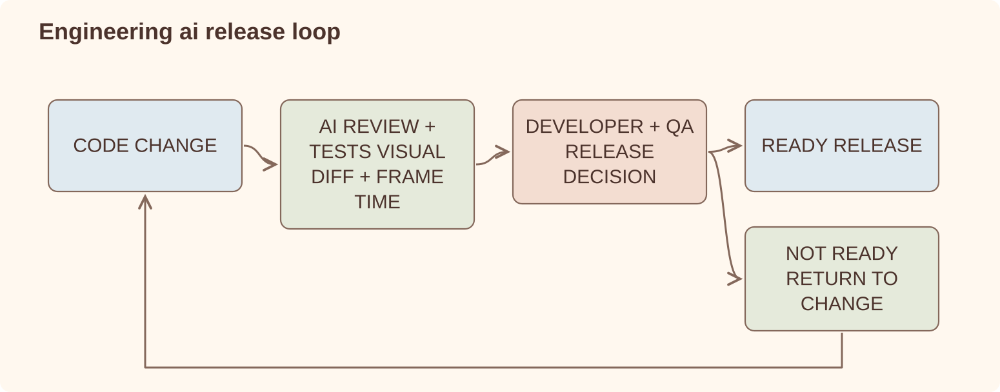

Case study
AI for Engineering Teams
AI-assisted checks and reports that my teams use in code review, QA and day-to-day engineering work.
AI PR review / visual regression suites / per-PR performance benchmarks / scheduled analysis agents / engineering dashboards
Problem
I was less interested in measuring how much code AI generated than in finding places where it could remove a real source of friction. We started with review checks, visual regressions, performance results and summaries linked back to their sources.
These workflows run on an open-source codebase and are part of the normal development process.
The systems
AI review on every PR
Each pull request carries an AI review status check that analyzes correctness, performance and error handling and sets pass/fail. It does not replace the accountable reviewers — every PR still needs developer and QA approval — it raises the floor before humans spend attention.
Visual regression as a comment
A PR comment triggers a pixel-diff suite against committed image baselines and posts the verdict back to the PR; a second command regenerates baselines when a change is intentional. Rendering regressions became a reviewable artifact instead of a QA lottery.
Performance signal per PR
Successful builds dispatch frame-time benchmarks on a dedicated machine fleet, and the results land back on the PR as a comment — CPU, GPU, exceptions. A performance regression is visible before merge, not after release.
Leadership intelligence agents
Scheduled agents turn repository activity into a daily engineering dashboard: releases and deltas, CI health, escaped-defect and regression rates, review distribution and bus factor per system — with pinned metric definitions so week-over-week deltas mean something.
Where AI sits
Automation produces early evidence. People still decide what ships.

Interesting problems
- Where should AI sit in the review process? We run the AI check before developer and QA review. Named people still approve the change and remain responsible for it.
- How do you keep the output useful? We ask for something concrete: a pass/fail check, pixel diff or frame-time change. If the output repeatedly has no effect on the review, it is removed.
- How do you make reported metrics inspectable? Each metric has a fixed formula and time window. When the definition changes, the report says so.
- How do you check a summary? The dashboard links to the pull requests, issues and releases it counted, so a person can reproduce the number.
Lessons learned
- The most useful workflows were attached to an existing review or release step.
- Quality checks gave us more value than measuring generated-code volume.
- If a report repeatedly produced no action, we removed or changed it.